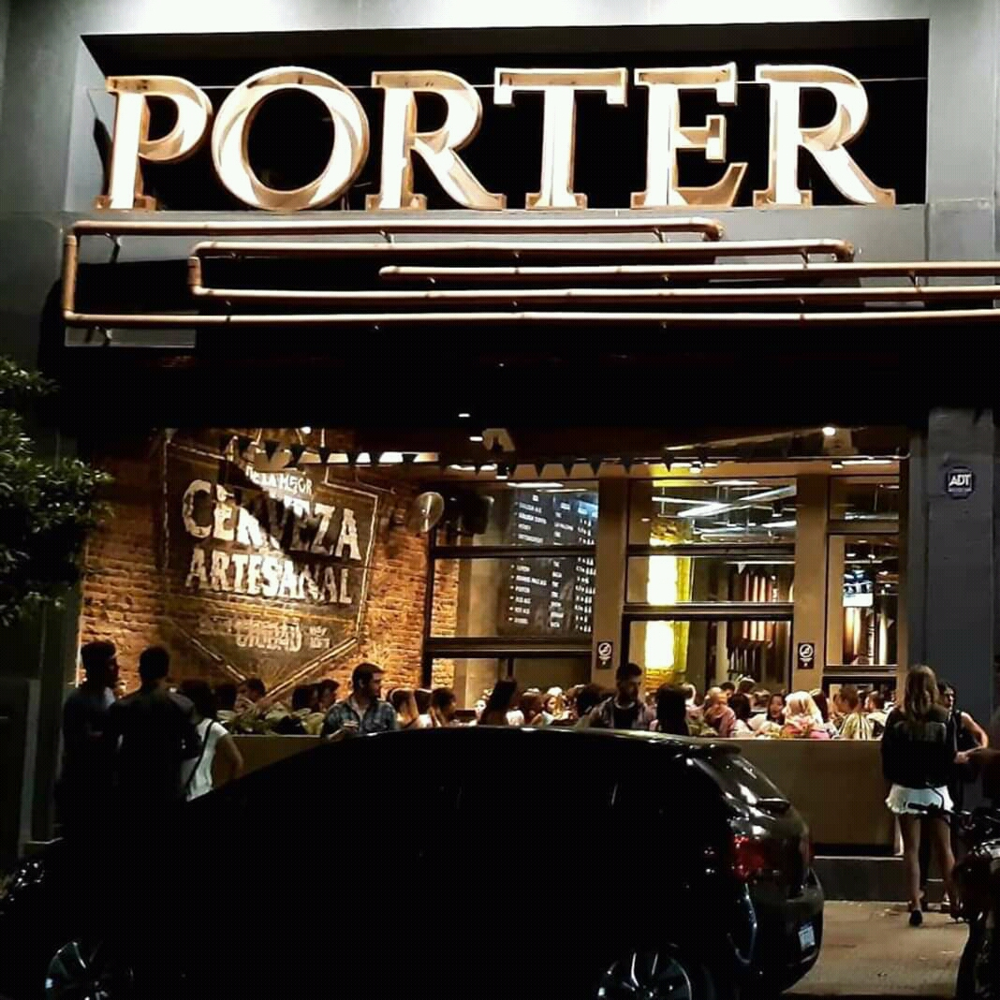

En esta oportunidad, vamos a reseñar a Porter, específicamente el bar ubicado en Barrio Norte.
- Cervezas: muy buenas cervezas. Siempre se entregan con una excelente temperatura y de sabor no dejan nada que desear.
- Papas:: ricas. No son las mejores de todas, pero para sentarse a compartir con una cerveza de por medio están mas que aceptables.
- Ambiente y lugar: lo mejor que tiene esta cervecería. El bar es enorme, podés hacer una gran reunión y ellos siempre tendrán espacio para ofrecerte. Una excelente decoración e iluminación. Sin dudas, uno de los bares más lindos de Tucumán.
- Servicio: no es el mejor servicio de todos. A veces demoran un poco, pero también tuvimos veces que nos atendieron muy rápido, así que depende del día que vayas.
Puntuación: 7.5/10
Escrito por: Luciano Chipolina, Tomás Quiroga, Rosario Serrano y Matías Gómez